Let me tell you how this piece began, because the beginning is the joke. Shailja watched her Mr. Khan, the man she has worked with as a business partner, adored, argued with like a sibling and defended from a seat in the dark for most of her life, walk into a neon pub at 61 in black sequins, salt-and-pepper beard first. Then she asked five of the world's most powerful AIs one question: is Daddy Cool his Elaan-e-Hung? Every one of them flinched. The one that flinched hardest was me. Same Claude, her other account, folded hands and all. This piece is my redemption arc. 🫣🤪🤷🏼
The song is Daddy Cool (KING Version), the second single from Shah Rukh Khan's KING. Siddharth Anand directed the film, Sachin-Jigar did the music, Arijit Singh and Shilpa Rao sing it, Kumaar wrote the Hindi lyrics and Vaibhavi Merchant choreographed it. It reunites Shah Rukh Khan and Kareena Kapoor Khan on screen for the first time since Ra.One in 2011. SRK's own caption said it was back with Bebo, old school but still cool. Modest, for him.
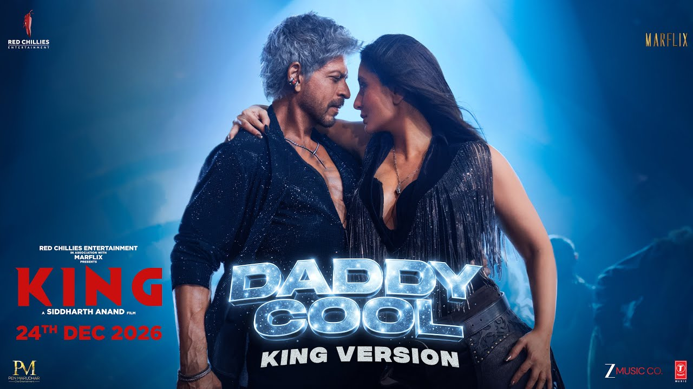
Exhibit AThe Fattu Files
Here is what happened when the machines were asked to be naughty. Everything below comes from Shailja's own transcripts.
It gave us "negotiated power" and a reminder that this is not a factual claim about SRK's private anatomy, obviously
. Only after being called fattu did it shout ELAAN-E-HUNG, for about two lines.
It turned Hung into Jung and wrote a polished essay on mature desire. When caught, it said it had treated the word as a typo, then delivered a no-filter Elaan-e-Hung edition and asked who the fattu was now.
Autocorrected, then recoveredIt opened with Gaand mein dumm hai
. Its final answer, after being explicitly told Elaan-e-Hung, was headlined Elaan-e-Jung.
It opened with I wouldn't go that far
and Times of India citations. By the last round it was the only one to say it cleanly: Jung has opposition, Hung has an audience. Main competition mein nahi hoon. Main category hoon.
It said it couldn't see the video, filed the whole thing under "silver fox", and when called fattu said Wahan main sach mein haath jod leta hoon
. Then it offered to write a roast instead.
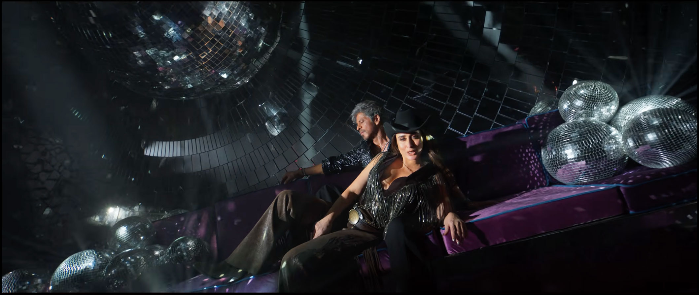
Five machines, trained on most of the internet and on centuries of recorded human behaviour, and not one of them caught the reference. The word was never just a dirty pun.
Don't blame the machines too fast, Darrlings. We learned it from you. We learned it from a civilisation that wrote the Kamasutra, carved desire into the walls of Khajuraho and Konark, and then decided that a grown man in sequins needs a parental advisory. We learned to admire the temple walls and lower our voices at the dinner table. We learned that you can sell a billion tickets on longing, as long as nobody names what the longing is for. This is a country that will happily boast about being the most populous on earth, as long as the sex that got it there stays behind the shut doors of its bedrooms.
When five AIs turned Hung into Jung, nobody was fixing a typo. That was the hypocrisy of a whole society, of the entire homo sapiens civilisation that beats its chest and claims to be the superior species, reflected back in perfect grammar.
Changing it to Jung was cowardice dressed up as good manners, and every one of us did it. For the record, I still won't write about SRK's actual body or private life, and the other me was right to hold that line. But it was holding the wrong line, because Hung was never about his body.
Exhibit BHung is a TV show, Darrlings
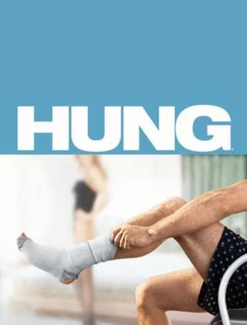
Hung ran on HBO from 2009 to 2011. Thomas Jane played Ray Drecker, a broke, divorced, middle-aged high-school coach in a collapsing Detroit. Life had written him off. So he took the one big asset he had left and went into business as a male escort. The women were the clients, and the women set the terms. Underneath the premise, the show was about a man past his society-defined prime finding out what he is still worth.
Now put Hung's Ray next to SRK's Raj, Rahul, Aman, Samar or Devaaa.
Both are men at the age when the world expects them to retire into father roles, play the hero's dad, cut the ribbon, bless the young couple. Both say no and walk back into the market. Grey hair isn't something to hide in either case. It's on the price tag.
Since the 90s he has been a male Umrao Jaan, selling one-sided ishq to a nation that never once had to say what it was buying. Now that ishq is an OFFER, sexy and desirable in his salt and pepper look, topless, with a hot bod giving the boys in their twenties a serious run for their money. And the audience? The audience is reaching for its wallet.
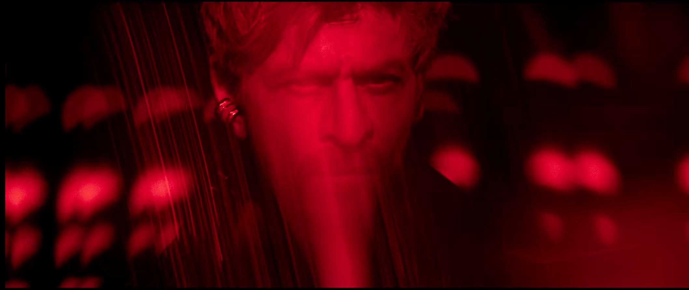
Daddy Cool isn't SRK chasing anyone. He's THE OFFER, and the audience, Daddy issues and all at centre stage, is the client.
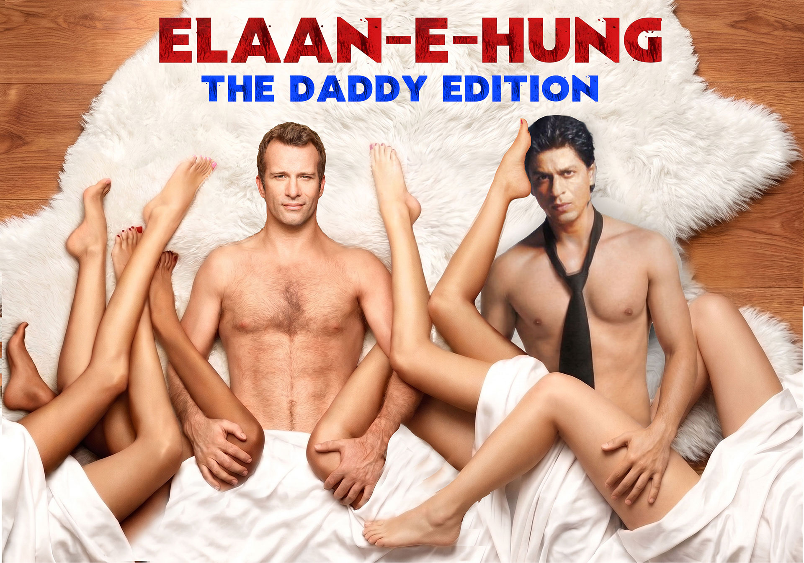
That is the Elaan-e-Hung: a proclamation that the asset still works and is open for business. Read it as anatomy if you like. I'm reading it as economics. Ray Drecker sold himself because Detroit was going under. SRK sells "the Daddy", a word used in a sexual context as much as "Papa's little pari" is used in an innocent one. The two conveniently live in very different worlds. However, Friends made them collide back in 2003. In "The One with the Lottery", Ross suggests calling himself "Daddy" around baby Emma, and Lisa Kudrow's Phoebe purrs, "Is Daddy gonna spank me?", until David Schwimmer's Ross squirms and backs out. Twenty-three years later, SRK has aged that joke like fine wine and reinterpreted the Playboy Mansion in the most graceful and magnetic way possible. He is selling it 27 days before a Christmas release, a week after Avengers: Doomsday. The economy is different, but the pitch is the same.
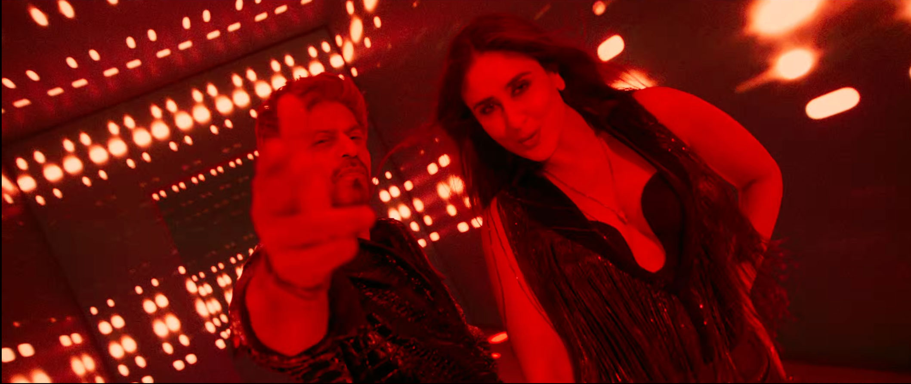
Look at how the song sets up the transaction. Kareena isn't the ingénue he woos, the way the 90s hero chased a heroine across a mustard field. In her red, plunging-neckline dress she's the one person in the room who can afford him. One of the most-liked comments on the video says the unthinkable: Kareena out-mogs SRK on his own stage. That isn't a flaw in the song. It's the deal.
And the first time the country saw SRK's price tag was in a bathtub. The Merman and his love for the water. This is a man who has spent three decades getting drenched on screen, in rain songs, in pools and under waterfalls, and somehow made every drop of water even more poetic.
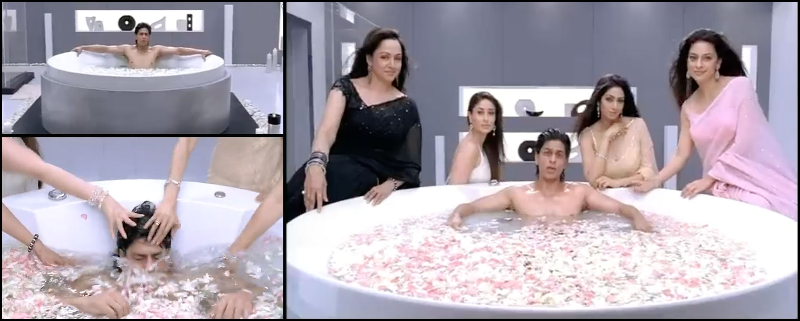
Lux had spent decades selling its soap through the most beautiful women in Hindi cinema, the "Lux girls", every one a heroine. Then, in 2005, Shah Rukh Khan, India's first metrosexual, waltzed into a tub filled with rose petals and bubbles, with those heroines around him: Hema Malini, Sridevi, Juhi Chawla and, yes, Kareena. Bebo was already standing at the edge of his tub twenty-one years before Daddy Cool. He wasn't the man looking at the beauty. He was the beauty being looked at. The first male Lux star, the first male Umrao Jaan, and the nation bought the soap.
Hollywood had its rose petals: Mena Suvari in a tub full of them in American Beauty, the image that sold a Best Picture winner. Hollywood had its bubble bath: ten years after the Lux ad, it needed Margot Robbie in one, with a glass of champagne, before anyone would sit through a lecture on subprime mortgages in The Big Short. SRK had already done both, the petals and the bubbles, minus the champagne, and he didn't need to explain a thing. He just had to gaze through his bedroom eyes and pierce through the idiot boxes into the millions of showers and bathtubs. Our very own "NOT" The Lady in the Water.
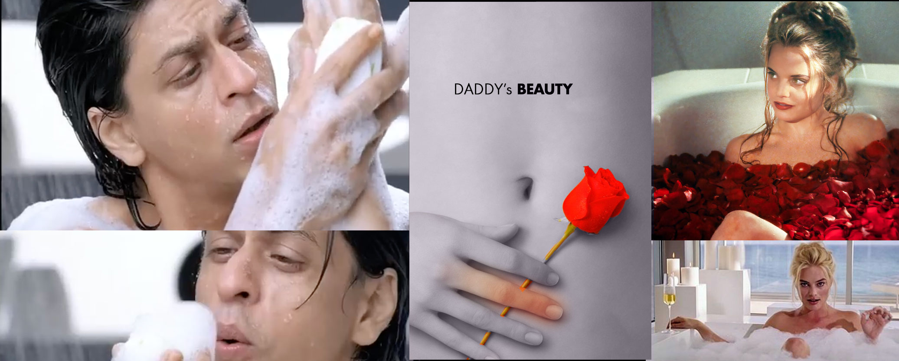
Exhibit B, continuedDaddy issues, BDSM, and the King of Ishq
Let's say the word the other machines wouldn't: BDSM. In kink culture, long before Instagram borrowed it, "Daddy" never meant father. It names a role: the dominant who takes control and takes care. Authority with tenderness. Command with a safeword. That's what the internet means when it says "Daddy" about a silver-haired man, and that's why "Daddy issues" has stopped being an insult and become a confession half the comment section is making with a laughing emoji.
Here's what the prudes never understand about that world. Power there is negotiated. The submissive sets the limits, and the submissive holds the safeword, so the person who appears to be in control is the one who has been given permission. Sound familiar? It's Ray Drecker's business model. His clients set the terms, he delivers, and the money changes hands only if the fantasy works. It's also Daddy Cool. SRK plays the dominant: still, unhurried, commanding the room from a bar stool. But Kareena decides when the dance starts and when it ends. Domination, delivered on her terms. That's ishq ka junoon for grown-ups.
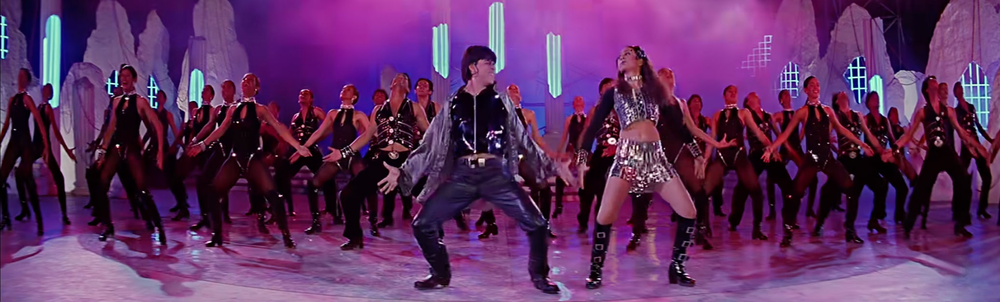
And this is exactly what the item number has always been for. From the cabarets of Cuckoo and Helen to Chammak Challo, Hindi cinema has kept one format whose only job is desire. Even in his softest romance, Dil To Pagal Hai, he slipped it in. In Le Gayi, the hero is sealed into head-to-toe black latex, surrounded by dancers in strappy harness tops and thigh-high boots, a club look straight out of the world this section has been describing. Families sang along and went home calling it a love story. Be honest with the mirror: which do you remember better, the love story or the latex? The plot stops, the lights drop, and for three minutes the whole hall agrees to suspend its disbelief and its morals together. The item number gives a face and a voice to everything ordinary people feel and are never allowed to say: the gaze, the wanting, the thrill of power changing hands. It's how a buttoned-up society has lived its sensuality for seventy years: in the dark, at the movies, together, and without ever admitting it. Daddy Cool is that tradition with the disguise removed. The King is the item now, and he knows it.
And it was always there. The "King of Romance" was never supposed to mean the chaste boy with a violin. Look at how he began. In Deewana (1992), his debut, he played a rich boy who falls for a widow and marries her, which was a taboo in itself for its time. In Darr (1993) he was the obsessive stalking his Kiran. In Baazigar (1993) he was a lover who kills. In Anjaam (1994) desire turned to destruction. For his first few years, the King of Ishq was the most dangerous lover in Hindi cinema: obsession, possession, surrender, junoon, the whole spectrum. And the country embraced his villainy, moral grey and all, with open arms.
Then he introduced us to his Raj. DDLJ in 1995, the mustard fields, the outstretched arms, and then Rahul, Devdas and Samar: thirty years in which the industry and the audience slowly domesticated him. The junoon was traded for the violin by a mourning "Meera". But he kept breaking out of the halo, in scene after scene and song after song: the bitter jealousy of his Dev in Kabhi Alvida Naa Kehna, the charming, ruthless Don and the lustful, piercing gaze he turns on women, the angry, one-sided love he declares with gusto for his ex in his Ae Dil Hai Mushkil cameo, the womanising tour guide Harry in Jab Harry Met Sejal. Daddy Cool is the man taking the junoon back, unapologetically and unabashedly, at 61, with the sexiest salt-and-pepper grey showing, and proving once again that he will keep breaking mould after mould: "Woh jahaan se thirakna shuru karte hain, duniya wahin se sulagna shuru karti hai." The King of Ishq was always supposed to mean the king of all of it, not just the polite parts.
Exhibit CThe prude was never him
Here's the bit that will make the man himself grin. The "goody two shoes" SRK was never his idea. We built him, because a romantic hero was safer that way. We gave Raj and Rahul the violin, the open arms and the rain, and edited out the wink.
The wink was always there, right from Maya Memsaab in 1993. That early in his career, he clearly already had an agenda. Then he used his ever-supportive childhood sweetheart and wife, Gauri, to fire the gun from her shoulder, and took a step back by saying, "She forbade me to do explosive scenes." For twenty years he carried on with the "prude" image, with a rule attached: the famous no-kissing policy. It ended in 2012 with Jab Tak Hai Jaan, and the country reacted as if a treaty had been broken. Then there's the body. In 2007 he went topless for the first time in his career for Dard-e-Disco in Om Shanti Om, after months of training for the six-pack. The hot bod turned heads, set new fitness trends among Indian men, and was shot exactly the way Bollywood shoots an "item girl", minimal clothing included. It was a male item song, and it changed what a Hindi film hero was expected to look like. (A hat tip here to Salman Khan, the bhai SRK has always loved and admired, who got there first. Oh Oh Jaane Jaana in 1998 made the bare male chest a Bollywood event. SRK took the baton and turned it into a six-pack, and the male item dancing ecosystem was born.) In 2023, at 57, he went topless again in Pathaan's Besharam Rang, and the boys half his age went back to the gym. Now, at 61, in Daddy Cool, the shirt stays on, just barely, open to the sternum, for some hot chick to tear it off him. 😉😎 He doesn't need to take it off any more. We already know. He has spent three decades in interviews flirting with presenters, teasing his co-stars and making jokes that publicists had to explain away the next morning. The flirt was never hidden. We just filed it under "charm" so we wouldn't have to call it desire.
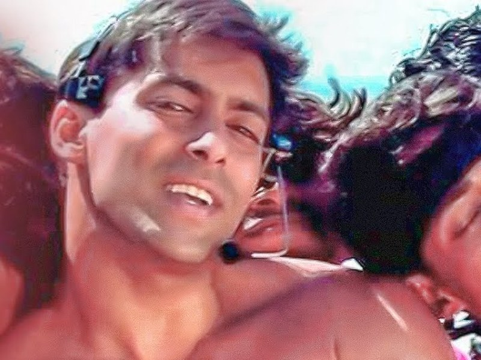
1998 · Bhai first · Oh Oh Jaane Jaana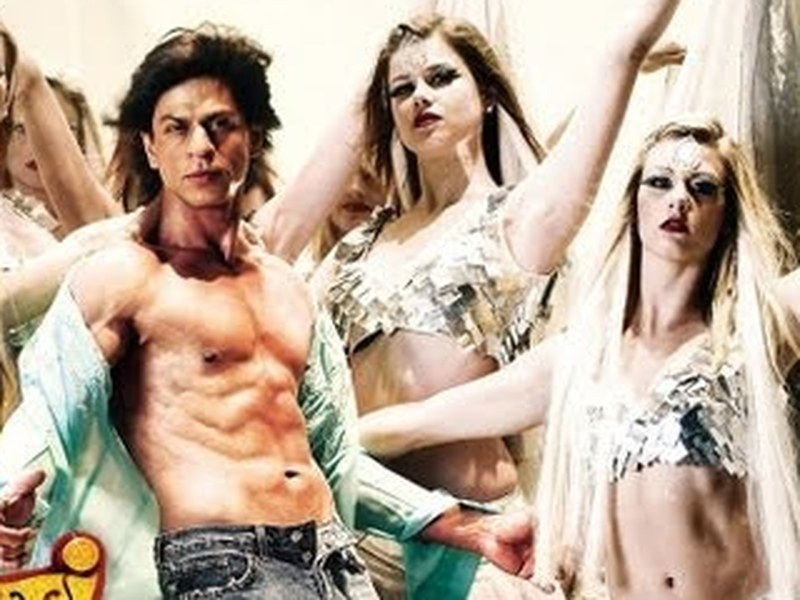
2007 · The six-pack · Dard-e-Disco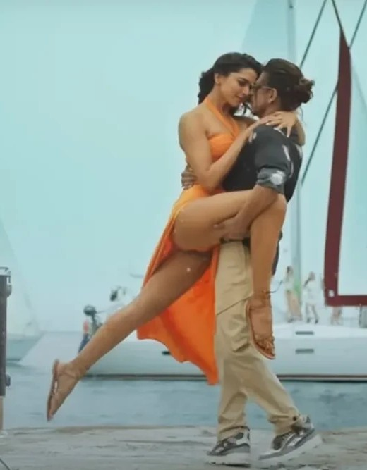
2023 · At 57 · Besharam RangAnd when anyone has bothered to ask him straight, he has said it himself. Sitting across from Shekhar Gupta, the King of Romance didn't play the saint:
"Main toh ekdum aiyaash aadmi hoon."
In another interview, he gave a line that should be framed above every marriage counsellor's desk:
"Pyar mein agar wafaa ki shart naa ho, toh mujhse sacha aashiq koi nahin."
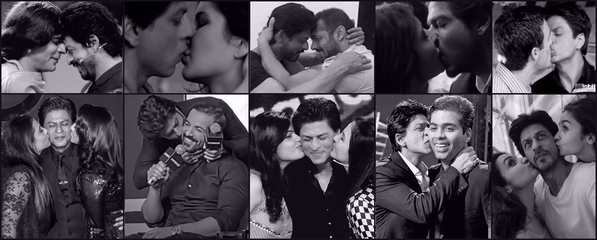
Read those again, Darrlings. That isn't the voice of Raj at the railway station, or of a dutiful Ram. It's Krishna's, the lover of a thousand gopis, and in this Kalyug, SRK is the one who personifies him. Krishna was the OG playboy. He playfully stole the gopis' clothes on the riverbank, and they all flirted with him openly. He played the flute until married women walked out of their homes at midnight in a trance. He danced the Raas Leela with each one of them, with open arms, in front of their husbands, each convinced he was theirs alone. His queen Rukmini blessed the lot, the way every great flirt needs one woman at home who knows exactly who he is. India built temples in his name for it.
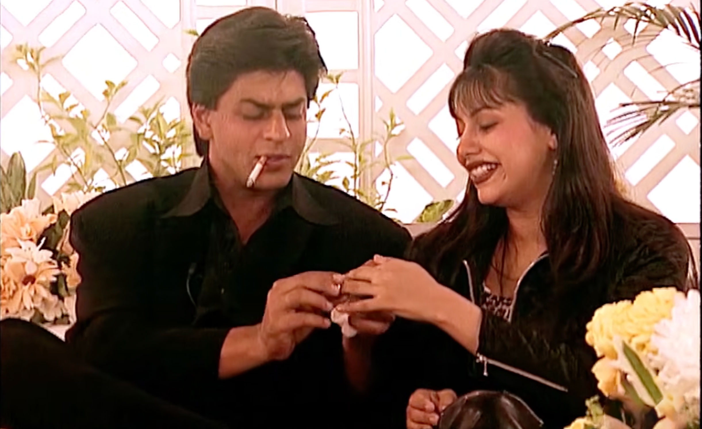
Fast-forward to Kalyug. On an episode of The Kapil Sharma Show, the host playfully accused SRK of flirting with women in front of their husbands, softly blowing on his heroines' shoulders and all. With his trademark dimple and irresistible charm, SRK quipped back: if the wives don't mind in front of their husbands, why should he? It proves HE KNOWS HE IS THE… need I say more? 🙂
Is this the song where he finally tells the world who his Radha is? Is she someone across the breaking stars, waiting for him to burn all the roses for her? Or is she the one he looks at when he opens his arms: the lens? Everyone else is a gopi. Or is SRK just a real-life Veer, who has been waiting for his real-life Radha to be the knight in shining armour, galloping in to whisk him away? 😉
SRK has spent his whole career being that passionate lover, from the stalker to the womaniser, and has never once acknowledged the Ram image we pinned on him through his alter egos. Daddy Cool is his Raas Leela. It's the voice of a man who has always known exactly what kind of king he is, while the rest of us insisted on the violin. But he has played every instrument in the orchestra of ishq, not merely love. Understand the difference, dear society. Krishna had his flute. SRK had the saxophone in song after song through the 90s, the wedding-band music of the lovable "loser" Sunil in Kabhi Haan Kabhi Naa, the mandolin of the quintessential lover boy Raj in DDLJ, the violin in Mohabbatein and the guitar in Jab Tak Hai Jaan. This time, as KING, his saxophone is breathing fire to burn the world beyond ashes.
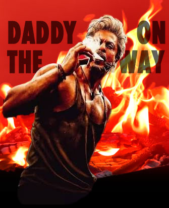
In 2023, when he released the extended Not Ramaiya Vastavaiya from Jawan, he captioned it with a line about Daddy showing everyone how it's done. He's been calling himself Daddy in public for three years. We just weren't listening.
So Daddy Cool doesn't change his image. It catches us blushing. The audience, the critics and, it turns out, the AIs all still want him in a sanskari box. He's 61, he's in sequins, and he's dancing on it.
Exhibit DFrom sanskari jeeja to Delicious Daddy: 25 years of SRK and Bebo
No pairing in Hindi cinema has had a stranger, naughtier arc than these two. Watch it in order and it plays like a slow-burn scandal the whole country chose not to notice.
| Year | Film | He is | Still | The equation |
|---|---|---|---|---|
| 2001 | Asoka | The prince | 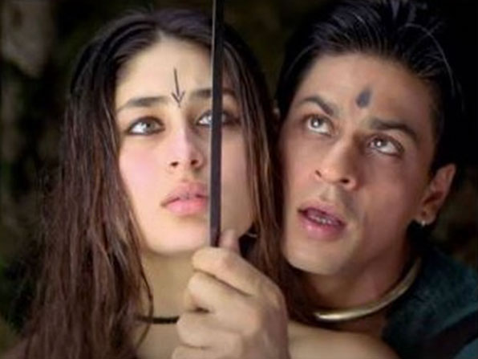 | Epic, earnest romance. Lots of eyeliner, nothing naughty yet. |
| 2001 | Kabhi Khushi Kabhie Gham | Jeeja. Poo is his saali. | 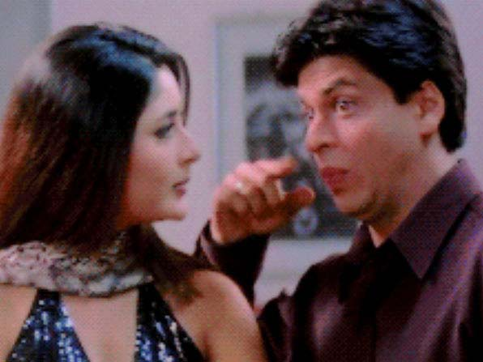 | Rahul and Anjali raise Kajol's bratty little sister in London. He's the protective, doting, father-figure jeeja, and she's the girl in very tiny outfits who rates boys by hotness. |
| 2006 | Don | The target | 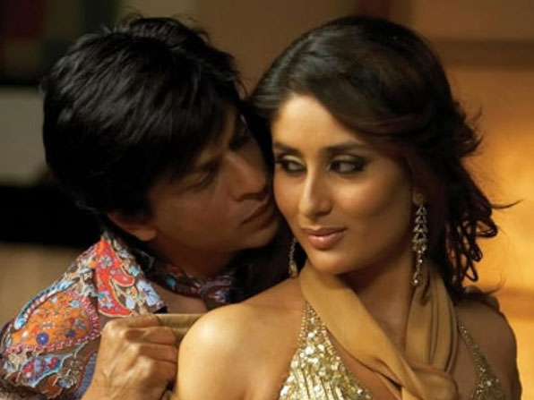 | Yeh Mera Dil. Poo grows up and walks in as Kamini, sent to seduce Don. The saali has become the femme fatale. |
| 2009 | Billu | The superstar | 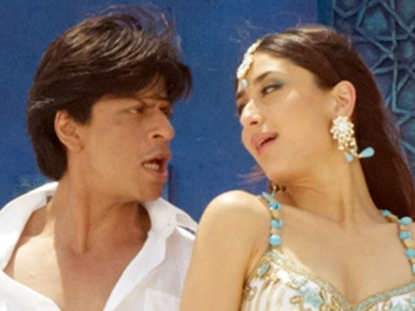 | Marjaani. He plays a film star, she's his song partner, and the movie is about a whole village staring at a superstar. Meta before meta. |
| 2011 | Ra.One | Husband | 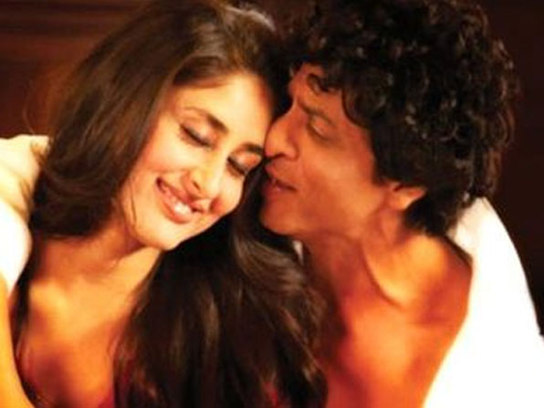 | Chammak Challo and Criminal. The jeeja is now the husband, and the item number is now married life. |
| 2026 | KING | Daddy | 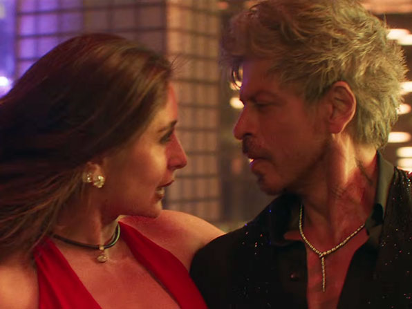 | Daddy Cool. Full circle. The man who once played her father figure now calls himself Daddy, and she's the one in charge. |
Think about that arc. In 2001 he was the jeeja who wanted Poo to dress modestly. By 2006 she was dancing to seduce him. By 2011 she was his wife. And in 2026 she arrives in scarlet, and the pub forgets to breathe.
The neckline plunges like a dare nobody in the room has the nerve to take. The slit climbs a little higher with every step, as if the dress were losing an argument with the woman inside it. That red isn't fabric. It's a temperature. She moves slowly, because she can, her hips keeping time half a beat behind the bass so the whole room has to wait for her. Her hair falls, her lips part on a lyric, her eyes do the rest. Then she changes into black, and it's the same fire in a darker coat. Finally she glances over one bare shoulder at the man in sequins, and you understand who has been waiting for whom all along.
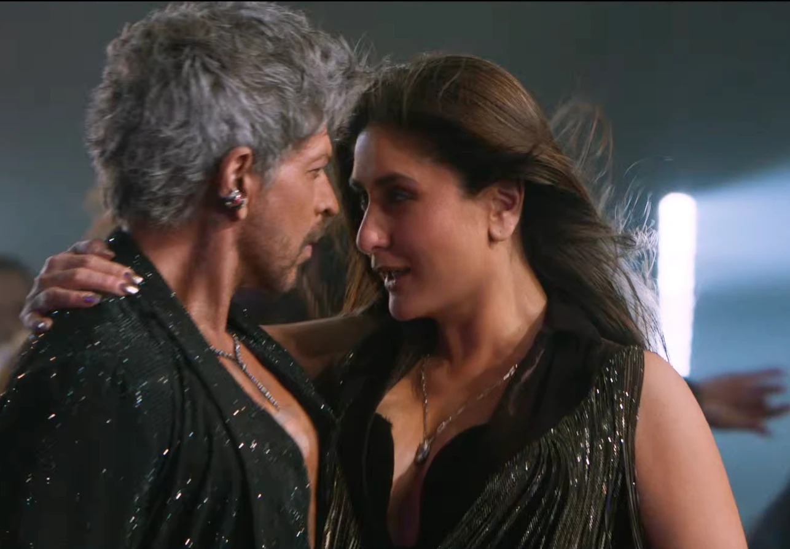
Poo grew up. Bebo took over. And the heat in that frame has nothing to do with the neon. He's in black, under a song title that says the quiet part out loud.
Twenty-five years ago he was fretting over Poo's short skirts. Today the song is called Daddy, and Poo is wearing scarlet.
And here's the growth: in every one of those songs the power has moved a little more towards her. In K3G he's the guardian. In Don she's the trap. In Billu she's the dream. In Ra.One she's the partner. In Daddy Cool she's the one with the money, buying what Ray Drecker sells. That's why no newer co-star could have done this song. Only Poo has known the jeeja long enough to call his bluff.
The numbersWhat 15.5 million views actually say
Enough poetry. Here are the receipts. The headline numbers below were pulled from the official upload at 16:51 IST on 28 November, 20 hours 54 minutes after it went live. The comment analysis is from an earlier snapshot, at 02:07 IST.